После Kyoto: на юг
Зачем и сколько
Сколько дней и почему: E2: 1 день (26.10).
Как добраться: из Osaka 10:00 → 11:38 (9 890 ¥).
Погода в твои дни (Open-Meteo, 14.10 10:24): Hiroshima: +23/+10, ☀️ сухо
Hiroshima и Miyajima


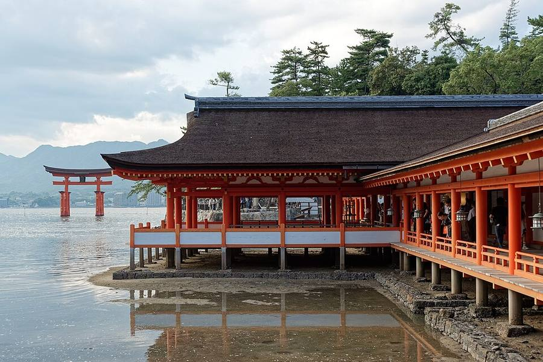


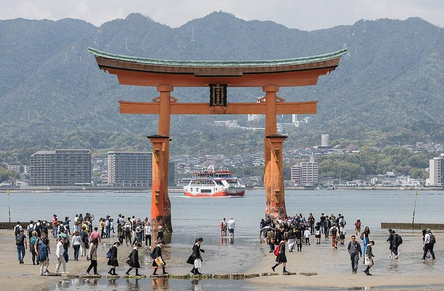


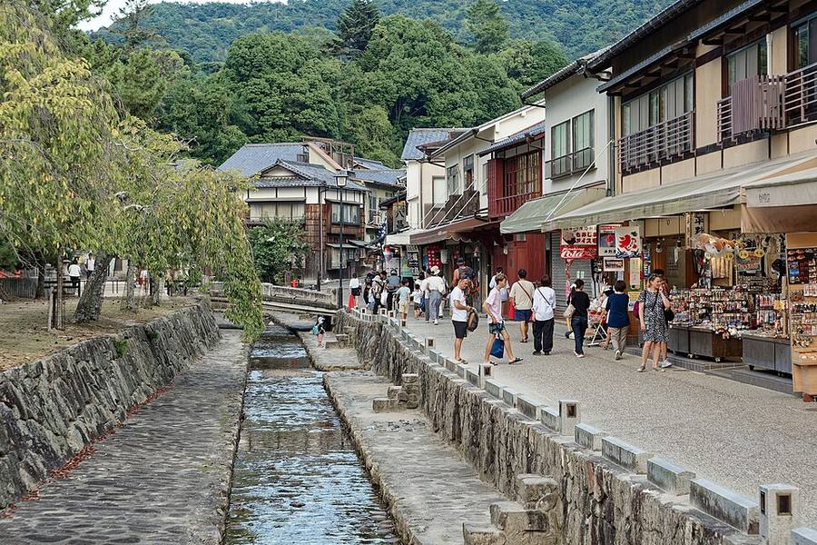


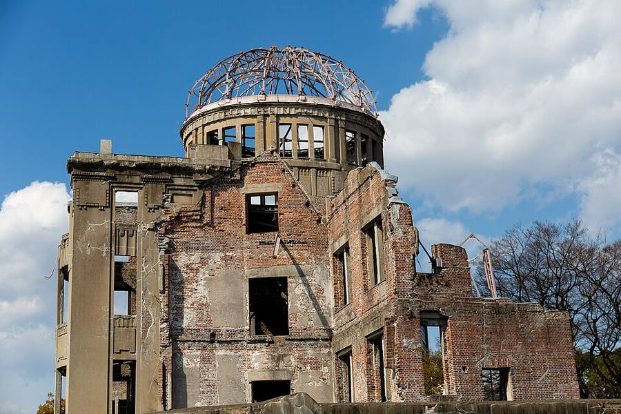


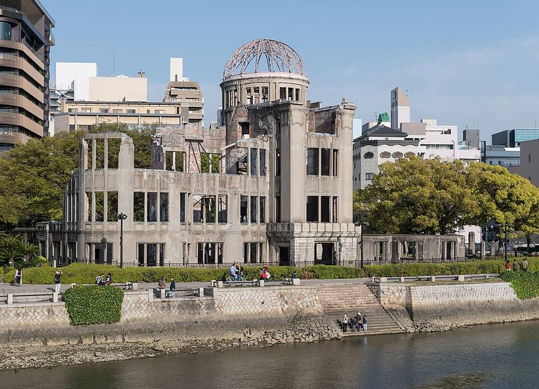


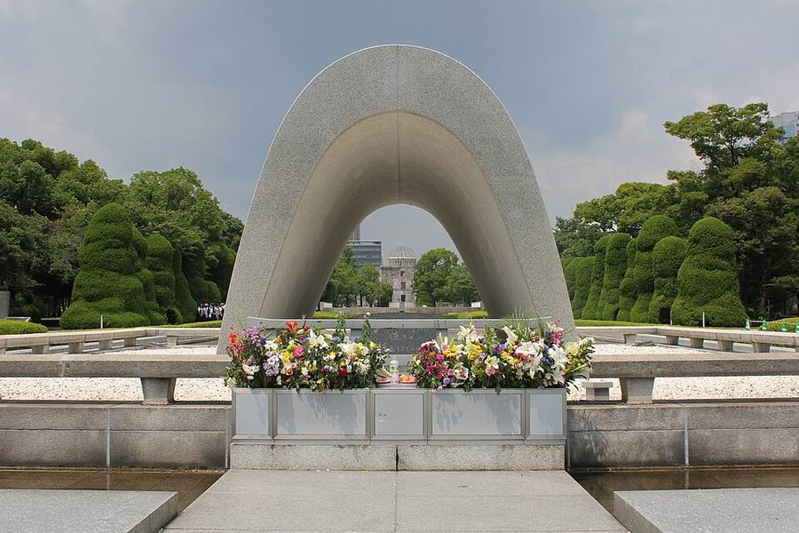


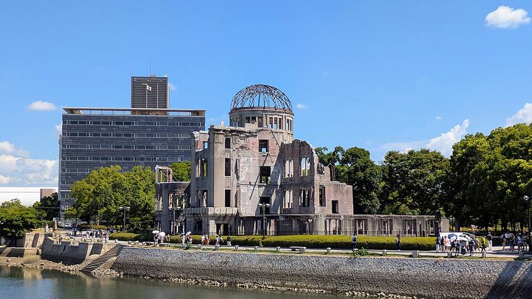
_viewed_across_Motoyasu_River_from_Peace_Memorial_Park_(August_2026).jpg){kind=link}
Парк Мира и Атомный купол. Остров Miyajima с воротами святилища Itsukushima в море (ЮНЕСКО). Из Kyoto около 1 ч 55 мин.
Beppu: «ады» и гейзер


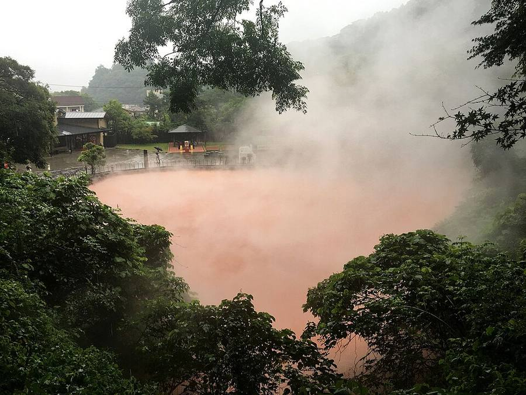
,_Beppu,_Kyushu,_Japan.jpg){kind=link}


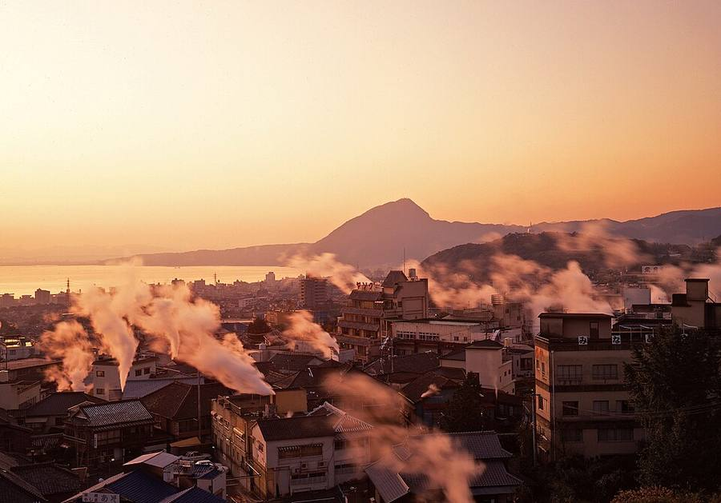


- Семь «адов» (jigoku): голубой Umi Jigoku, красный Chinoike, кипящая грязь, Tatsumaki Jigoku - настоящий гейзер, бьёт каждые 30-40 минут.
- Все открыты 8:00-17:00, общий билет на все семь 2 400 ¥ (день покупки и следующий, офиц. сайт).
- Из Hiroshima около 2 ч 12 мин с пересадкой в Kokura (экспресс Sonic до Beppu/Oita около 1 ч 30 мин).
- Погода в Beppu на 15-22.10: днём +19…+28, почти без дождя.
- Прямых рейсов Oita → Naha нет. На Okinawa удобно из Fukuoka: много рейсов, около 1 ч 40 мин.
Ещё похожее на юге
Unzen Jigoku (Nagasaki)

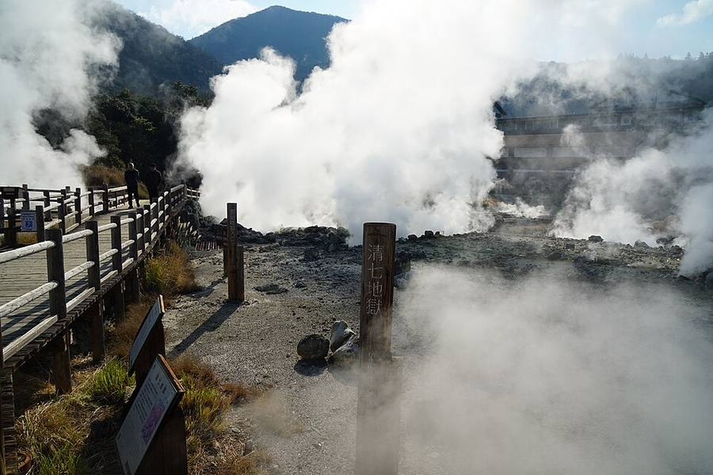


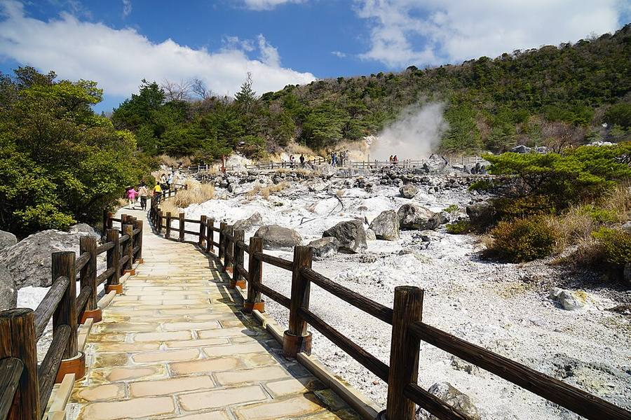


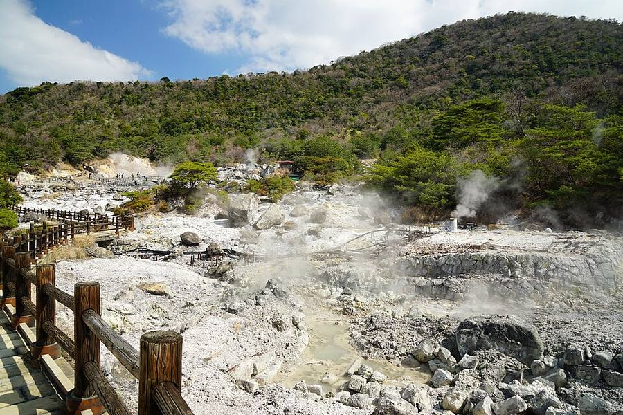


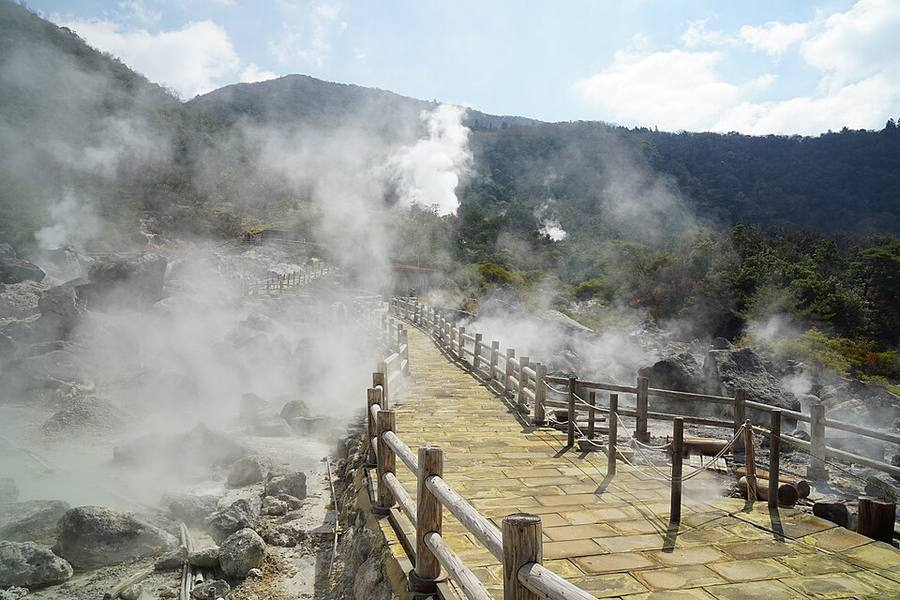

Паровые поля с деревянными тропами, похоже на Owakudani. В списке предупреждений JMA на 12.10 его нет, то есть уровень 1.
Вулкан Aso (Kumamoto)
Сейчас уровень 2, вход к кратеру ограничен (JMA, 12.10). Sakurajima в Kagoshima - уровень 3, подъём запрещён. Kirishima (Shinmoedake) - уровень 2.
Okinawa


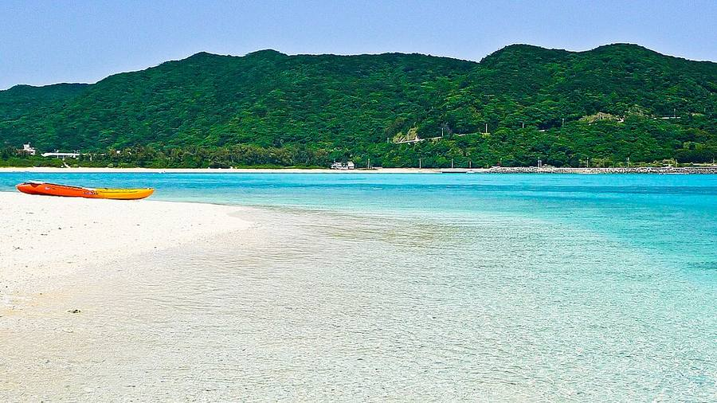


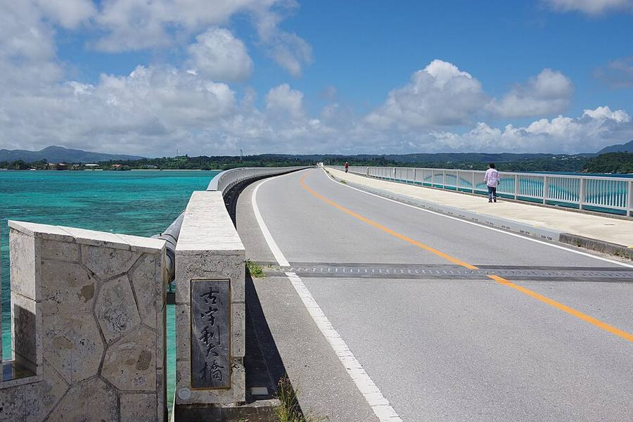


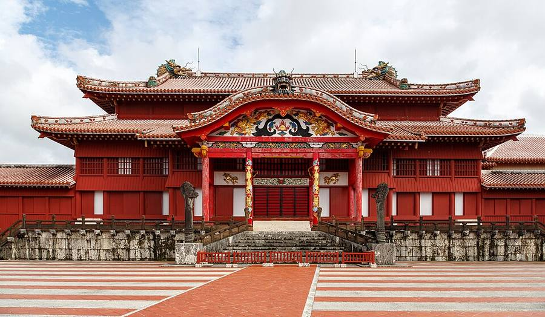


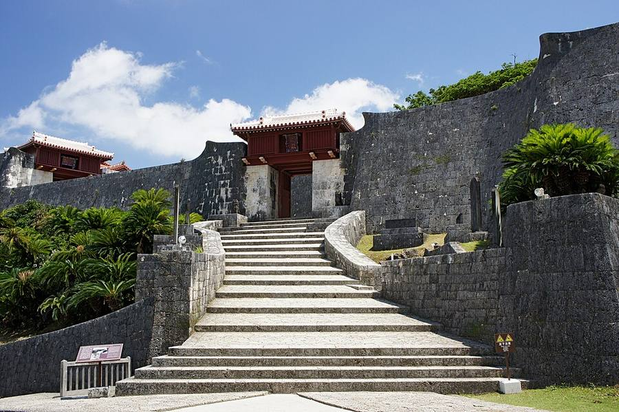

В конце октября там ещё лето: прогноз в Naha (14.10 10:24) на 23-28.10 днём +24…+27. Острова Kerama, мост Kouri, замок Shuri.
Видео
 Miyajima Island Guide – The Perfect Day Trip From Hiroshima
Miyajima Island Guide – The Perfect Day Trip From HiroshimaThe Navigatio Japan · 11 мин
 THE Hiroshima Guide: ESSENTIAL Spots For Your Trip!
THE Hiroshima Guide: ESSENTIAL Spots For Your Trip!PiQtour Japan · 41 мин
 Beppu Hell Tour perfect guide 7 hells! Prices? Famous food? Efficient direction?
Beppu Hell Tour perfect guide 7 hells! Prices? Famous food? Efficient direction?NihonMura · 18 мин
 Beppu "Jigoku Meguri" 8 Hells Tour, Oita | Japan Travel Guide
Beppu "Jigoku Meguri" 8 Hells Tour, Oita | Japan Travel GuideJapanTravel · 2 мин
 🇯🇵 Japan Tour - Beppu Seven Hells: JIGOKU MEGURI
🇯🇵 Japan Tour - Beppu Seven Hells: JIGOKU MEGURIInternational Rambler · 26 мин
 Island Paradise in Okinawa | Keramashoto National Park
Island Paradise in Okinawa | Keramashoto National ParkJapan Guide · 12 мин
 OKINAWA, JAPAN (2026) | How To Visit The BEST ISLANDS In Okinawa (Kerama Islands
OKINAWA, JAPAN (2026) | How To Visit The BEST ISLANDS In Okinawa (Kerama IslandsWorld Wild Hearts · 13 мин
 summer in Okinawa | exploring the Kerama islands 🪸🦌🏝️
summer in Okinawa | exploring the Kerama islands 🪸🦌🏝️Eryn Krouse · 21 мин